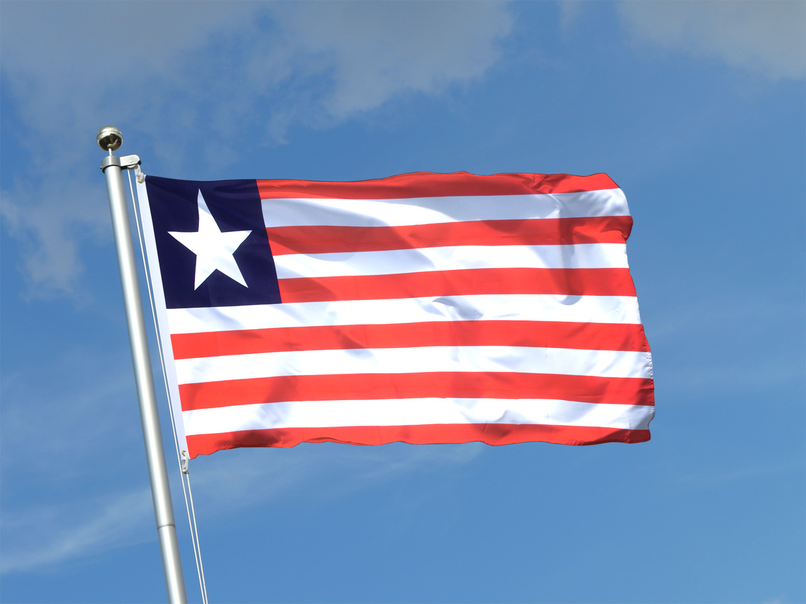

About Me
My name is Kasee Kennedy. I am currently a student at BYU-Idaho, and also a road safety volunteer For the National Safety Partnership of Liberia. I am working towards my degree in Web Design and Development.

Paynesville , Liberia
Liberia is a country located on the west coast of Africa. It is bordered by Sierra Leone, Guinea, and Côte d'Ivoire. The capital city of Liberia is Monrovia, which is also the largest city in the country. Liberia has a rich history and culture, with a diverse population that includes people from different ethnic groups, including the Mende, the Mano, and the Kriol. The country has a diverse economy, with agriculture, mining, and logging being the main industries. Liberia is also known for its beautiful beaches and natural beauty, which attracts tourists from around the world. Overall, Liberia is a unique and fascinating country with a rich history and culture.
